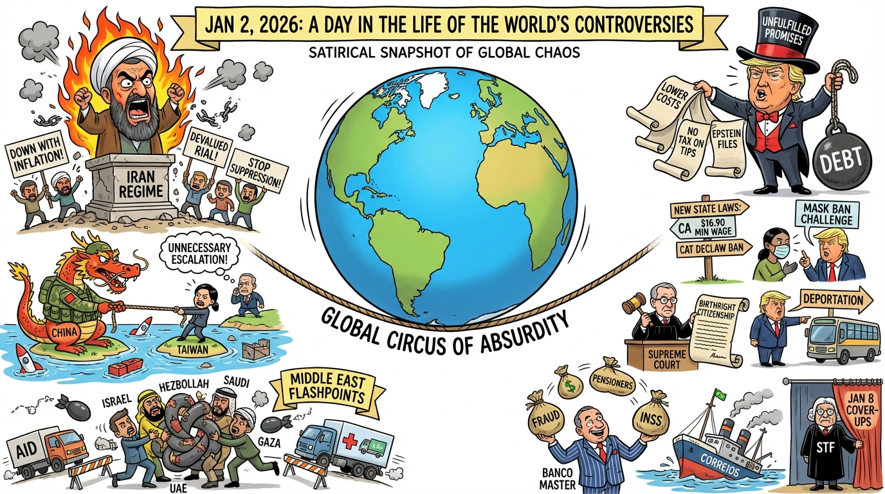

The Daily Globe: Iran's Escalating Protests and Calls for Regime Change, Unfulfilled Trump Campaign Promises and Economic Pressures, and Banco Master Corruption Scandal
Published on 2026-01-02

World
- Iran's Escalating Protests and Calls for Regime Change
Widespread demonstrations against economic collapse, inflation over 40%, and the rial's devaluation turned violent, with reports of deaths among protesters and security forces. Critics accused the regime of brutal suppression.
- China-Taiwan Military Tensions
China's completion of large-scale 'Justice Mission 2025' drills around Taiwan, including rocket launches and blockades, prompted U.S. warnings of unnecessary escalation. Taiwan vowed to defend its sovereignty.
- Middle East Flashpoints: Israel-Lebanon, Yemen, Gaza
Israel's deadline for Hezbollah disarmament expired without compliance, signaling potential fighting. Saudi-UAE clashes in Yemen via airstrikes; Israel's ban on aid agencies in Gaza drew accusations of humanitarian blockade.
- U.S. Domestic Political Divisions Under Trump
Jack Smith's testimony implicating Trump in January 6 events; accusations of Trump withholding funds from pro-Trump areas in Colorado; expiration of ACA subsidies potentially hiking premiums for millions.
- Tragic New Year's Incidents in Europe
Deadly explosion/fire at Swiss ski resort bar killed dozens; church burnings and clashes in Netherlands left two dead, fueling anti-immigration rhetoric.
USA
- Unfulfilled Trump Campaign Promises and Economic Pressures
Persistent high costs for groceries, housing, energy, healthcare; no caps on credit card rates, taxes on Social Security/tips/overtime, unreleased Epstein files fueling frustration.
- New State Laws Taking Effect
Around 800 new laws including minimum wage hikes to $16.90 in California, bans on cat declawing and plastics, union rights for rideshare drivers, mask ban for law enforcement challenged by Trump admin.
- Immigration and Birthright Citizenship Reforms
Supreme Court rulings modifying birthright citizenship for undocumented immigrants; Trump's deportation plans and pulling National Guard from Democratic cities.
- NYC Mayor Zohran Mamdani's Swearing-In on the Quran
Socialist mayor-elect's ceremony drew conservative ire as symbol of radical Islam, while supporters defended religious freedom.
- Proposed TikTok Ban
Trump's push for nationwide TikTok ban amid national security fears reignited free speech vs. China threats debates.
Brazil
- Banco Master Corruption Scandal
Allegations of massive fraud involving Banco Master linked to BRB and government figures, extortion of elderly pensioners via unions and INSS schemes.
- Government Corruption and Fiscal Collapse
INSS frauds, state-owned enterprises deficits, Correios bankruptcy, rising public debt risking 2027 crisis tied to populist policies.
- Political Repression and January 8 Prisoners
Debates on freeing January 8, 2023 event prisoners; STF cover-ups, Alexandre de Moraes involvement.
- Economic Predictions and Social Unrest
Forecasts of dollar at R$5.20+, inflation; divisions fueled by government programs like Bolsa Família.
- Election and Media Tensions
2026 election speculation, media bias accusations, fake news crackdowns.
Topic Index
- protests
- Iran unrest
- China Taiwan tensions
- Middle East conflict
- Trump politics
- economic pressures
- Jan 6 testimony
- ACA subsidies